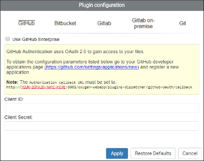
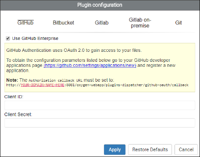
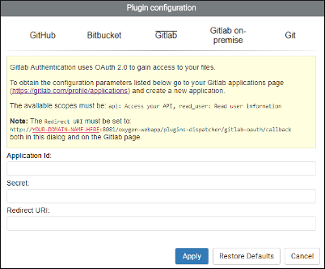
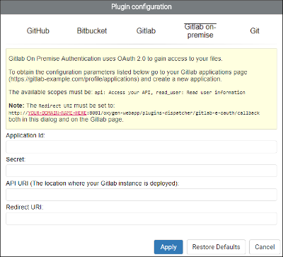
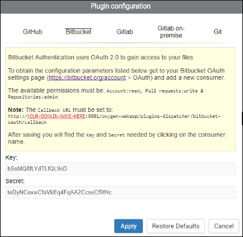
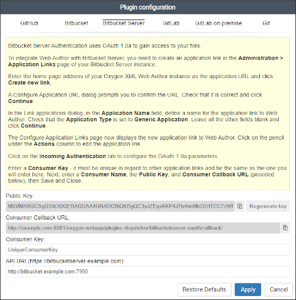
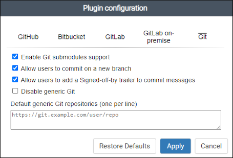

Integrating Web Author with Git (GitHub, GitLab, Bitbucket)
Oxygen XML Web Author includes a built-in Git Plugin that allows you to edit files stored in a Git repository. While it provides the ability to connect to any Git repository, it has better support for GitHub, GitLab, and Bitbucket integrations. The Git Plugin allows you to access repositories simply by using your login credentials.
GitHub Integration
You can configure your Git plugin to allow OAuth 2.0 authentication for GitHub integrations to access files stored in a public or private repository. Your team will then have access to a Login with GitHub button in the Git Login dialog box. You can configure your integration either by using github.com or with a GitHub Enterprise deployment.
Configuring a Git Integration with github.com
- Log in to GitHub and register a new OAuth application at https://github.com/settings/applications/new.
- Complete the form.
- The Authorization callback URL field should include the following path: [OXYGEN_WEBAUTHOR_URL]/plugins-dispatcher/github-oauth/callback, where [OXYGEN_WEBAUTHOR_URL] is the location where Web Author is deployed (for example, http://Your-Domain:8077/apps/webauthor).
- Click on Register application to obtain the Client ID and Client Secret credentials (they are displayed at the top-right section of the resulting page).
- Set your Client ID and Client Secret
credentials in your plugin configuration by doing the following:
- Go to the Administration Page.
-
In the Plugins section, click on the
 Configure icon for the Git plugin and select the
GitHub tab.
Configure icon for the Git plugin and select the
GitHub tab.Figure 2. GitHub Plugin Configuration Dialog Box  - Enter the Client ID and Client Secret in the Plugin configuration dialog box.
- Click Apply.
- Restart Oxygen XML Web Author.
Result: You now have access to the Login with GitHub button in the Git Login dialog box.
Configuring a Git Integration with a GitHub Enterprise Deployment
- Log in to GitHub Enterprise and register a new developer application. The URL is:
[GithubEnterpriseUrl]/settings/applications/new.
- Complete the form.
- The Authorization callback URL field should include the following path: [OXYGEN_WEBAUTHOR_URL]/plugins-dispatcher/github-oauth/callback, where [OXYGEN_WEBAUTHOR_URL] is the location where Web Author is deployed (for example, http://Your-Domain:8077/apps/webauthor).
- Obtain the Client ID and Client Secret credentials at: [GithubEnterpriseUrl]/settings/developers.
- Set the Client ID, Client Secret, and
the API URL in your plugin configuration by doing
the following:
- Go to the Administration Page.
-
In the Plugins section, click on the
Configure icon for the Git plugin, select the
GitHub tab, and select the Use GitHub
Enterprise option.Figure 3. GitHub Enterprise Plugin Configuration Dialog Box  - Enter the API URL, Client ID, and Client Secret in the Plugin configuration dialog box. The API URL is the URL of your GitHub Enterprise deployment ([GithubEnterpriseUrl]).
- Click Apply.
- Restart Oxygen XML Web Author.
GitLab Integration
You can configure your Git plugin to allow OAuth 2.0 authentication for GitLab integrations to access files stored in a public or private repository. Your team will then have access to a Login with GitLab button in the Git Login dialog box.
You can configure your integration either by using a GitLab or GitLab On-Premise deployment.
Configuring a Git Integration with GitLab
- Sign in or register at https://gitlab.com/profile/applications.
- Go to Applications and authorize Web Author to obtain the
configuration parameters.
- The Redirect URI should be set as: [OXYGEN_WEBAUTHOR_URL]/plugins-dispatcher/gitlab-oauth/callback, where [OXYGEN_WEBAUTHOR_URL] is the location where Web Author is deployed (for example, http://Your-Domain:8077/apps/webauthor).
- For the Scopes, select: api, and read_user.
- Set your credentials and redirect URI in your plugin configuration by
doing the following:
- Go to the Administration Page.
-
In the Plugins section, click on the
Configure icon for the Git plugin and select the
GitLab tab.Figure 5. GitLab Plugin Configuration Dialog Box  - Enter the Application ID and Secret credentials.
- The Redirect URI must be set to: [OXYGEN_WEBAUTHOR_URL]/plugins-dispatcher/gitlab-oauth/callback, where [OXYGEN_WEBAUTHOR_URL] is the location where Web Author is deployed (for example, http://Your-Domain:8077/apps/webauthor).
- Click Apply.
- Restart Oxygen XML Web Author.
Result: You now have access to the Login with GitLab button in the Git Login dialog box.
Configuring a Git Integration with a GitLab On-Premise Deployment
- Sign in to GitLab ([GitLabOnPremiseUrl]/profile/applications).
- Go to Applications and authorize Web Author to obtain the
configuration parameters.
- The Redirect URI should be set as: [OXYGEN_WEBAUTHOR_URL]/plugins-dispatcher/gitlab-e-oauth/callback, where [OXYGEN_WEBAUTHOR_URL] is the location where Web Author is deployed (for example, http://Your-Domain:8077/apps/webauthor).
- For the Scopes, select: api, and read_user.
- Set your credentials, API URI, and redirect URI in your plugin
configuration by doing the following:
- Go to the Administration Page.
-
In the Plugins section, click on the
Configure icon for the Git plugin and select the
GitLab on-premise tab.Figure 6. GitLab On-Premise Plugin Configuration Dialog Box  - Enter the Application ID and Secret credentials.
- Set the API URI to match the location where your GitLab instance is deployed.
- The Redirect URI must be set to: [OXYGEN_WEBAUTHOR_URL]/plugins-dispatcher/gitlab-e-oauth/callback, where [OXYGEN_WEBAUTHOR_URL] is the location where Web Author is deployed (for example, http://Your-Domain:8077/apps/webauthor).
- Click Apply.
- Restart Oxygen XML Web Author.
GitLab On-Premise Known Issues
Reverse Proxy Server in Front of GitLab On-Premise
If you have a reverse proxy in front of your GitLab On-Premise instance, make sure that requests are forwarded to the GitLab instance exactly as they are received.
A common problem occurs when using Apache as a reverse proxy in front of GitLab when it is configured to not allow encoded slashes in URLs. Apache decodes the encoded slashes and sends the malformed request to GitLab.
External URL Configured Incorrectly for GitLab On-Premise
GitLab On-Premise needs to know the URL that is used to reach it. Make sure this URL is the same as the URL written in the API URI field of the GitLab Plugin Configuration dialog box.
Bitbucket Integration
You can configure your Git plugin to allow OAuth 2.0 authentication for Bitbucket integrations to access files stored in a public or private repository. You can configure your integration either by using a Bitbucket or Bitbucket Server deployment.
Configuring a Git Integration with Bitbucket
- Log in to Bitbucket and go to the user settings page ( https://bitbucket.org/account).
- Go to go to the OAuth page and click Add consumer to obtain the Key and Secret credentials.
- Set your credentials in your plugin configuration by doing the
following:
- Go to the Administration Page.
-
In the Plugins section, click on the
Configure icon for the Git plugin and select the
Bitbucket tab.Figure 7. Bitbucket Plugin Configuration Dialog Box  - Enter the Key and Secret credentials.
- Click Apply.
- Restart Oxygen XML Web Author.
Result: You now have access to the Login with Bitbucket button in the Git Login dialog box.
Bitbucket Server Integration
- Set your credentials in your plugin configuration by doing the
following:
- Go to the Administration Page.
-
In the Plugins section, click on the
Configure icon for the Git plugin and select the
Bitbucket Server tab.Figure 9. Bitbucket Server Plugin Configuration Dialog Box  - Follow the on-screen instructions in the Bitbucket Server plugin configuration dialog box.
- Click Apply.
- Restart Oxygen XML Web Author.
Result: You now have access to the Login with Bitbucket Server button in the Git Login dialog box.
General Git Support
While Oxygen XML Web Author has more advanced support for GitHub, Gitlab, and
Bitbucket, you can connect to any other Git repository. This support is enabled by default.
Your team can log in to your Git repository by clicking the generic  Git icon in the Web Author
Dashboard.
Git icon in the Web Author
Dashboard.
Administrators do have some options that are available for generic Git integrations and they can be found in the Git tab of the plugin configuration.
- Go to the Administration Page.
-
In the Plugins section, click on the
Configure icon for the Git plugin and select the
Git tab.Figure 11. General Git Options The Git tab includes the following options:
- Enable Git submodules support
- When this option is enabled Oxygen XML Web Author will be able to browse or edit files from Git submodules.
- Allow users to commit on a new branch
- When this option is selected, users will be able to create new Git branches and commit on them.
- Allow users to add a Signed-off-by trailer to commit messages
- When this option is selected, users will have the option to specify a person who signed off on the commit and it will be added to the commit message.
- Disable Generic Git
- When this option is selected, the generic Git button will not be present on the Oxygen XML Web Author Dashboard.
- Default generic Git repositories
- To enable users to connect to specific generic Git repositories, you can provide a list of default Git repositories (one URI per line) that will be displayed on the Oxygen XML Web Author Dashboard.
Custom Options for the Git Plugin
It is possible to configure a service account for the Git connector so that users do not have to log in to edit documents. The following options can be set in the Oxygen XML Web Author options.xml file.- PLUGIN_CUSTOM_OPTIONS.git.enforced_user
- PLUGIN_CUSTOM_OPTIONS.git.enforced_pass
- PLUGIN_CUSTOM_OPTIONS.git.enforced_mail
Example: The options.xml file would look like this:<entry> <String>PLUGIN_CUSTOM_OPTIONS.git.enforced_user</String> <String>example_username</String> </entry> <entry> <String>PLUGIN_CUSTOM_OPTIONS.git.enforced_pass</String> <String>example_password</String> </entry> <entry> <String>PLUGIN_CUSTOM_OPTIONS.git.enforced_mail</String> <String>mail@example.com</String> </entry>